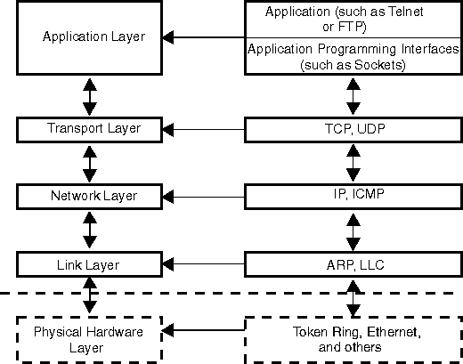

This section describes the network protocols in TCP/IP. The internet domain
is supported only by the TCP/IP protocol suite. Networking protocols like
TCP/IP are layered as shown in the following figure. For more information
on the internet domain and the TCP/IP protocol suite, refer to TCP/IP
Illustrated, Volume 1: The Protocols, W. Richard Stevens, Addison-Wesley
Publishing Co., 1994.
The Internet Layered Architecture

Topics
Transmission Control Protocol
(TCP)
User Datagram Protocol (UDP)
Internet Protocol (IP)
Internet Control Message Protocol
(ICMP)
Address Resolution Protocol (ARP)
Internet Group Management Protocol
(IGMP)